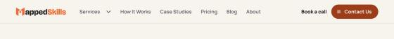

Logo correction — G1 review
Local proposal for owner approval, 2026-10-20. No production code, assets, commits or deploys. Full gate text: docs/logo-redesign/LOGO_G1_GATE.md.
- Approve the corrected artwork: the “MappedSkills” lockup and wordmark, in light and dark versions.
- Approve the header and footer sizing: the wordmark at 28 / 24 / 19px for viewports ≥600 / 360–599 / <360px.
- Then, separately, authorise or hold G2 (the production implementation).
1. Current vs proposed lockup
Owner requirementThe name is MappedSkills. Verified factThe current artwork itself ends in “Skill”.
Current (production)

Proposed lockup
Current, dark surfaces

Proposed lockup, dark surfaces
2. Proposed wordmark (header and footer)
Wordmark, light surfaces
Wordmark, dark surfaces (footer)
3. At the sizes the header actually uses (1× CSS px)
| Viewport | Current, as rendered live | Proposed wordmark | Lowercase letter height |
|---|---|---|---|
| <360px | | 8.5 → 8.7px | |
| 360–599px | | 8.5 → 10.9px | |
| ≥600px | | 9.9 → 12.8px |
Verified factThe live site renders 24px below 380px, not the intended 22px. In direction-c.css the 599px rule comes after the 379px rule and overrides it. G2 would fix this.
4. Fit in the live header (simulated locally, not deployed)
Verified factI swapped the image client-side in a local browser pane on mappedskills.com. With the proposed sizes, no header row wrapped and there was no horizontal scroll at 320, 340, 360, 375, 600 or 1200px. At 200% text the header wraps with both the current and the proposed logo, which is its existing designed behaviour.
| Viewport | Free space for logo | Proposed width | Result |
|---|---|---|---|
| 320 | 111.6px | 104.5px (19px tall) | Fits |
| 340 | 131.6px | 104.5px (19px) | Fits (24px would not) |
| 360 | 151.6px | 132px (24px) | Fits |
| 375 | 166.6px | 132px (24px) | Fits |
| 600 | 171.9px | 154px (28px) | Fits |
| 1200 | nav slack 129 → 83px | 154px (28px) | Fits |
320px, wordmark at 19px
360px, wordmark at 24px
600px, wordmark at 28px
1200px, wordmark at 28px (cropped to the left 800px)

5. What changed since the first draft
- Tagline is now Manrope Bold, as intended (it was a Bricolage placeholder). The cap height went from 10.5 to 12 units, which reduced the tracking from 0.57em to 0.47em.
- M mark: the mirror axis is corrected (70 → 70.5), and the pinch between the two panels is narrowed to match the original. Every row is now within about 1px of the production raster.
- Wordmark viewBox is tightened to 4 units of clear space on each side, so the aspect ratio is 5.5:1.
- Optical size: I tested opsz 14, 24, 48 and 96 for the small wordmark. The smaller optical sizes are about 9% wider and would not fit at 320px, so opsz 96 is used everywhere.
6. Not covered yet
- Research requiredWhich formats Google accepts for the structured-data Organization logo. Until confirmed, G2 gives schema a PNG export.
- UnknownWhere the old artwork is used off-site (social profiles, Business Profile, decks), and whether an original vector of the M mark exists.
- Not tested: real devices, Safari and Firefox SVG rendering, forced-colours mode, the legacy rollback header and footer.